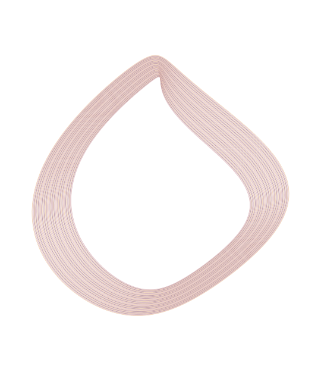

WEB APPLICATION / IN DEVELOPMENT
Online Technical Help
A support website that helps visitors describe the problem before choosing a service.
IT ANALYST AT McMASTER UNIVERSITY
Hamilton, Canada
A professional in IT. A builder by curiosity.
IT Analyst & Technology Builder
I support enterprise technology, work through operational problems, and build practical digital products.

01 / SELECTED WORK
Service websites, mobile experiments and software studies. Each with a different question to answer.
WEB APPLICATION / IN DEVELOPMENT
A support website that helps visitors describe the problem before choosing a service.
REACT NATIVE / LEARNING PROJECT
Connecting city search, coordinates and an hourly forecast in a mobile app.
C# / CONSOLE APPLICATION
Interfaces, inheritance and file handling in a searchable media collection.
04 / PRODUCT DESIGN STUDY
Exploring how a career tool could connect personal goals with practical next steps. Currently a design study, not a working application.
02 / THE DAY TO DAY
At McMaster, my work is about the systems people rely on to get through their day. I investigate issues, support applications and help people find the next step.
McMaster University
Hospitality Services
I support enterprise applications and operational workflows, investigate access and permissions, and coordinate with users, stakeholders and vendors.
Jira Service Management · Dynamics 365 ESM
OneCard /
TouchNet · Microsoft 365
McMaster University
University Technology Services
Supported Windows and macOS users with account access, software and connectivity. Documented investigations and worked with other support teams on escalations.
03 / A LITTLE ABOUT ME
I like understanding how things work, then seeing what I can make with them.
I’m a Filipino Canadian IT professional based in Hamilton. My work moves between enterprise support and independent software projects. One gives me a close view of everyday problems; the other lets me explore ideas through code and design.
I use AI tools in my independent development work. I review the output, make the decisions and test the result. The project stories explain what is implemented and what is still an idea.
WHERE I’VE STUDIED
Computer Systems Technician, Software Support studies
Mohawk College, Hamilton
Information Technology, Business Analytics studies
Batangas State University, Philippines
Also on my mind: Kitchenly, an early meal planning and household organisation experiment.
04 / START A CONVERSATION
A role, a project or something you’d like to build. Tell me a little about it.
Find me on LinkedIn